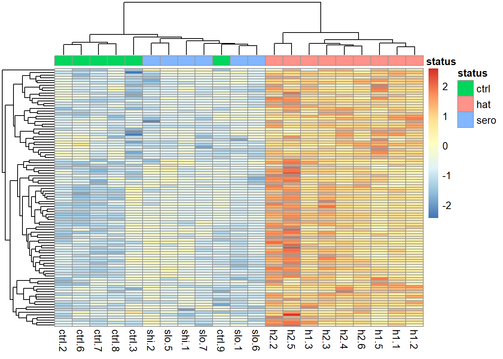
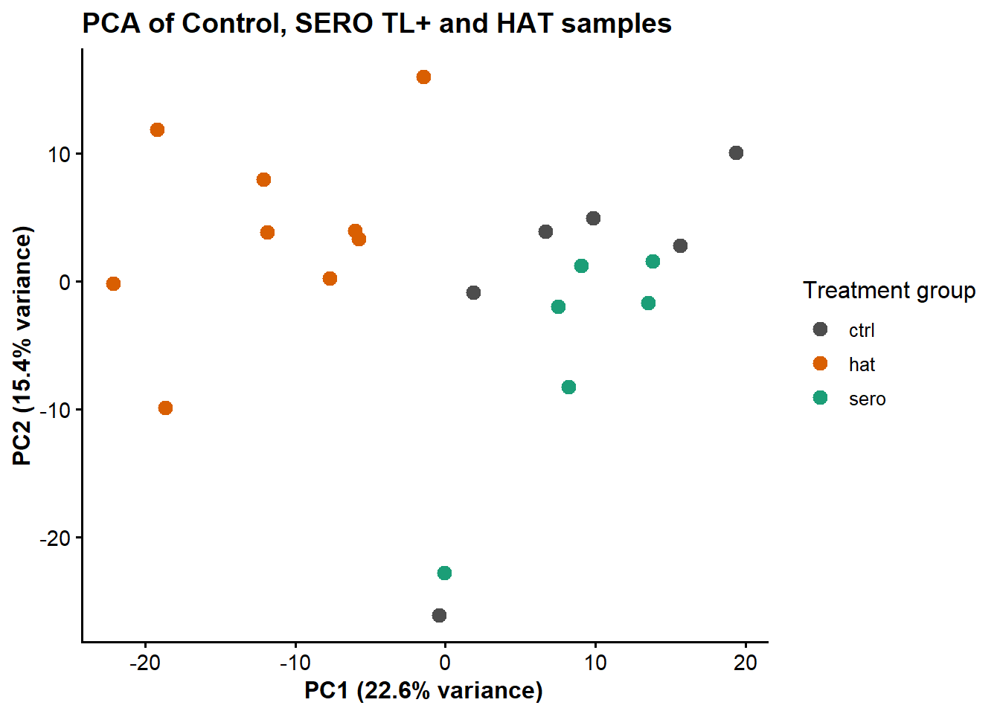
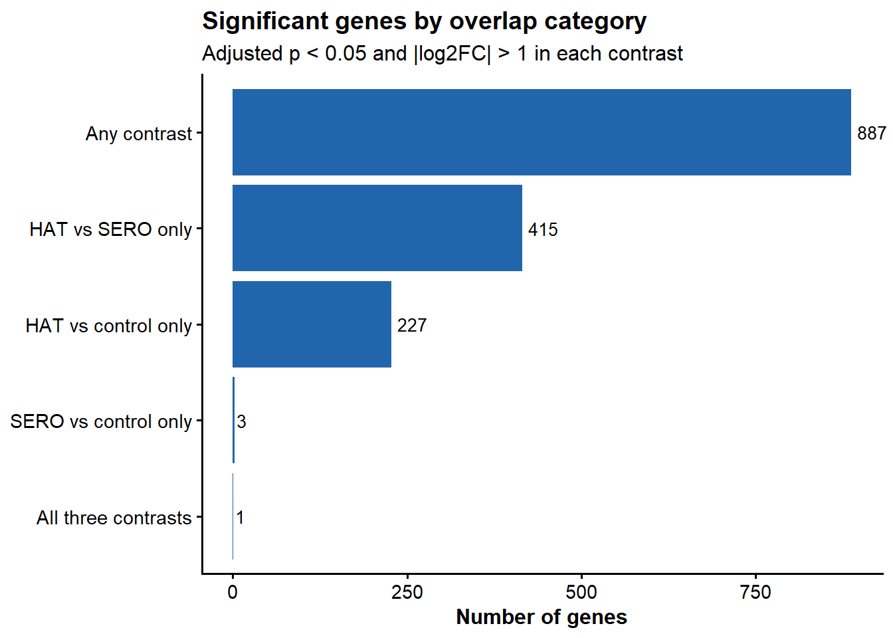

dir.create("results", showWarnings = FALSE)
dir.create(file.path("results", "tables"), recursive = TRUE, showWarnings = FALSE)
dir.create(file.path("results", "figures"), recursive = TRUE, showWarnings = FALSE)
library(DESeq2); library(ggplot2); library(pheatmap)
count_data <- as.matrix(read.csv("m_sample_counts.csv", header = TRUE, row.names = 1, check.names = FALSE))
sample_info <- read.csv("m_sample_info.csv", header = TRUE, row.names = 1, check.names = FALSE)
sample_info <- sample_info[colnames(count_data), , drop = FALSE]
sample_info$status <- factor(sample_info$status)
dds <- DESeqDataSetFromMatrix(countData = count_data, colData = sample_info, design = ~ status)
dds <- dds[rowSums(counts(dds)) >= 10, ]
gene_annotation <- data.frame(gene_id = rownames(dds), stringsAsFactors = FALSE)
annotation_file <- read.csv("human_annotations_from_orgHs.csv", check.names = FALSE, stringsAsFactors = FALSE)
gene_annotation$symbol <- annotation_file$SYMBOL_SAFE[match(gene_annotation$gene_id, annotation_file$ENSEMBL)]
missing_symbol <- is.na(gene_annotation$symbol) | gene_annotation$symbol == ""
gene_annotation$symbol[missing_symbol] <- gene_annotation$gene_id[missing_symbol]
dds <- DESeq(dds)
res_hat_vs_sero <- results(dds, contrast = c("status", "hat", "sero"), alpha = 0.05)
vsd <- vst(dds, blind = FALSE)
vst_values <- assay(vsd)
GROUP_COLOURS <- c(
ctrl = "#4D4D4D", sero = "#1B9E77", hat = "#D95F02"
)
course_theme <- theme_classic(base_size = 12) +
theme(plot.title = element_text(face = "bold", size = 14), axis.title = element_text(face = "bold"),
axis.text = element_text(size = 11))14 Comparing Multiple Groups and Contrasts
14.1 What you’ll learn
In this tutorial, you’ll bring together all your analyses to answer a three-way biological question and prepare for scientific communication of your results.
NoteLearning outcomes
By the end of this chapter you should be able to:
- distinguish an omnibus likelihood-ratio test from a directional pairwise contrast
- use an omnibus result to identify genes that vary across any group
- compare all-group PCA and heatmap patterns with earlier pairwise results
- use set operations to interpret overlapping and comparison-specific gene sets
- separate statistical evidence from biological interpretation throughout
TipRecap: code so far
14.2 The omnibus test: all three groups at once
Every contrast so far has compared exactly two groups. To ask “does this gene differ across any of the three groups?” we need a different kind of test: a Likelihood Ratio Test (LRT), which compares our full model against a reduced model with no group effect at all.
dds_lrt <- DESeq(dds, test = "LRT", reduced = ~ 1)
res_all_groups <- results(dds_lrt, alpha = 0.05)
ImportantCheck your understanding
A significant LRT result tells you that status improves the model fit for that gene. Does it tell you which pair of groups differs, or in which direction? What further result would you need to answer those two questions?
TipSolution
No — the LRT only tests whether some difference exists among the three groups; it does not identify which pair differs, or which direction the difference runs. To answer those questions you need a directional pairwise contrast, exactly like the HAT-vs-SERO contrast from Chapter 4.
lrt_data <- as.data.frame(res_all_groups)
res_all_groups_table <- data.frame(
gene_id = rownames(lrt_data),
symbol = gene_annotation$symbol[match(rownames(lrt_data), gene_annotation$gene_id)],
lrt_data, row.names = NULL, check.names = FALSE, stringsAsFactors = FALSE
)
res_all_groups_table <- res_all_groups_table[order(res_all_groups_table$padj), ]
write.csv(res_all_groups_table, file.path("results", "tables", "T12_omnibus_all_groups.csv"), row.names = FALSE)
sum(res_all_groups_table$padj < 0.05, na.rm = TRUE)[1] 189814.3 Visualising the omnibus result
omnibus_genes <- head(
res_all_groups_table$gene_id[!is.na(res_all_groups_table$padj) & res_all_groups_table$padj < 0.05],
100
)
omnibus_matrix <- vst_values[omnibus_genes, , drop = FALSE]
omnibus_z <- t(scale(t(omnibus_matrix)))
omnibus_z <- omnibus_z[complete.cases(omnibus_z), , drop = FALSE]
omnibus_annotation <- data.frame(status = sample_info$status)
rownames(omnibus_annotation) <- rownames(sample_info)
TipClick to reveal: what the heatmap should look like

14.4 PCA across all three groups
n_top_pca_genes_all <- min(500, nrow(vst_values))
pca_gene_variance_all <- apply(vst_values, 1, var)
top_pca_gene_ids_all <- names(sort(pca_gene_variance_all, decreasing = TRUE))[1:n_top_pca_genes_all]
pca_input_all <- vst_values[top_pca_gene_ids_all, , drop = FALSE]
pca_fit_all <- prcomp(t(pca_input_all), center = TRUE, scale. = FALSE)
pca_variance_all <- 100 * pca_fit_all$sdev^2 / sum(pca_fit_all$sdev^2)
pca_data_all <- as.data.frame(pca_fit_all$x[, 1:2])
pca_data_all$sample_id <- rownames(pca_data_all)
pca_data_all$status <- sample_info[pca_data_all$sample_id, "status"]
pca_plot_all <- ggplot(pca_data_all, aes(PC1, PC2, colour = status)) +
geom_point(size = 3) +
scale_colour_manual(values = GROUP_COLOURS) +
labs(
title = "PCA of Control, SERO TL+ and HAT samples",
x = sprintf("PC1 (%.1f%% variance)", pca_variance_all[1]),
y = sprintf("PC2 (%.1f%% variance)", pca_variance_all[2]),
colour = "Treatment group"
) +
course_theme
ggsave(file.path("results", "figures", "T12_PCA_all_groups.png"), pca_plot_all, width = 6.5, height = 5, dpi = 300)
pca_plot_all
NoteInterpretation checkpoint
Compare this all-group PCA with the SERO/HAT-only PCA from Chapter 8. Does adding the control samples change the dominant pattern? Use the omnibus heatmap to propose which genes seem to distinguish groups, then check whether the pairwise contrasts below support a specific direction — colour on a PCA plot is a starting point for a hypothesis, not evidence of direction on its own.
14.5 Comparing all three pairwise contrasts
We already have HAT vs SERO. Let’s extract the other two contrasts.
res_sero_vs_ctrl <- results(dds, contrast = c("status", "sero", "ctrl"), alpha = 0.05)
res_hat_vs_ctrl <- results(dds, contrast = c("status", "hat", "ctrl"), alpha = 0.05)A small helper function avoids repeating the same annotation-and-sort code three times:
format_de_table <- function(result) {
result_data <- as.data.frame(result)
result_table <- data.frame(
gene_id = rownames(result_data),
symbol = gene_annotation$symbol[match(rownames(result_data), gene_annotation$gene_id)],
result_data, row.names = NULL, check.names = FALSE, stringsAsFactors = FALSE
)
result_table[order(result_table$padj, na.last = TRUE), ]
}
write.csv(format_de_table(res_sero_vs_ctrl), file.path("results", "tables", "T12_DE_sero_vs_ctrl.csv"), row.names = FALSE)
write.csv(format_de_table(res_hat_vs_ctrl), file.path("results", "tables", "T12_DE_hat_vs_ctrl.csv"), row.names = FALSE)Next, a helper to extract just the significant gene IDs from any result, using a consistent rule:
get_significant_genes <- function(result, padj_cutoff = 0.05, lfc_cutoff = 1) {
result_data <- as.data.frame(result)
keep <- !is.na(result_data$padj) &
result_data$padj < padj_cutoff &
abs(result_data$log2FoldChange) > lfc_cutoff
rownames(result_data)[keep]
}
sig_hat_vs_sero <- get_significant_genes(res_hat_vs_sero)
sig_sero_vs_ctrl <- get_significant_genes(res_sero_vs_ctrl)
sig_hat_vs_ctrl <- get_significant_genes(res_hat_vs_ctrl)
length(sig_hat_vs_sero)[1] 653length(sig_sero_vs_ctrl)[1] 11length(sig_hat_vs_ctrl)[1] 466
TipTry it yourself: predict before you plot
Before looking at the bar chart below, predict which pair of these three gene sets will overlap the most, based on what you know about the three groups. Remember that set membership records statistical significance, not whether the direction of change agrees between two differently-oriented contrasts.
14.6 A bar chart of overlapping gene sets
A three-set Venn/Euler diagram can distort area to approximate overlap size, which makes it easy to misread. A bar chart shows the exact count for each overlap category instead.
sig_any <- union(union(sig_hat_vs_sero, sig_sero_vs_ctrl), sig_hat_vs_ctrl)
sig_all_three <- Reduce(intersect, list(sig_hat_vs_sero, sig_sero_vs_ctrl, sig_hat_vs_ctrl))
sig_hat_vs_sero_only <- setdiff(sig_hat_vs_sero, union(sig_sero_vs_ctrl, sig_hat_vs_ctrl))
sig_sero_vs_ctrl_only <- setdiff(sig_sero_vs_ctrl, union(sig_hat_vs_sero, sig_hat_vs_ctrl))
sig_hat_vs_ctrl_only <- setdiff(sig_hat_vs_ctrl, union(sig_hat_vs_sero, sig_sero_vs_ctrl))
overlap_lists <- list(
sig_any = sig_any,
sig_all_three = sig_all_three,
sig_hat_vs_sero_only = sig_hat_vs_sero_only,
sig_sero_vs_ctrl_only = sig_sero_vs_ctrl_only,
sig_hat_vs_ctrl_only = sig_hat_vs_ctrl_only
)
overlap_summary <- data.frame(
category = names(overlap_lists),
n_genes = vapply(overlap_lists, length, integer(1))
)
overlap_summary category n_genes
sig_any sig_any 887
sig_all_three sig_all_three 1
sig_hat_vs_sero_only sig_hat_vs_sero_only 415
sig_sero_vs_ctrl_only sig_sero_vs_ctrl_only 3
sig_hat_vs_ctrl_only sig_hat_vs_ctrl_only 227write.csv(overlap_summary, file.path("results", "tables", "T12_overlap_category_summary.csv"), row.names = FALSE)overlap_labels <- c(
sig_any = "Any contrast",
sig_all_three = "All three contrasts",
sig_hat_vs_sero_only = "HAT vs SERO only",
sig_sero_vs_ctrl_only = "SERO vs control only",
sig_hat_vs_ctrl_only = "HAT vs control only"
)
overlap_summary$label <- overlap_labels[overlap_summary$category]
overlap_summary$label <- factor(
overlap_summary$label,
levels = overlap_summary$label[order(overlap_summary$n_genes)]
)
overlap_plot <- ggplot(overlap_summary, aes(x = label, y = n_genes)) +
geom_col(fill = "#2166AC") +
geom_text(aes(label = n_genes), hjust = -0.2, size = 3.5) +
coord_flip(clip = "off") +
labs(
title = "Significant genes by overlap category",
subtitle = "Adjusted p < 0.05 and |log2FC| > 1 in each contrast",
x = NULL,
y = "Number of genes"
) +
course_theme
ggsave(file.path("results", "figures", "T12_overlap_category_counts.png"), overlap_plot, width = 8, height = 5.5, dpi = 300)
overlap_plot
NoteInterpretation checkpoint
Choose one comparison-specific region (for example, sig_hat_vs_sero_only) and one shared region (for example, sig_all_three). Look up those genes in the complete pairwise tables you saved earlier.
- Are their directions of change biologically coherent across contrasts?
- Why can a gene fall outside the significant set for one contrast, despite having a similar estimated fold change to a gene that is significant in that contrast?
14.7 Stretch goals and where to go next
Everything up to this point forms the core analysis. If you’d like to go further:
- GSEA (Gene Set Enrichment Analysis) uses the whole ranked gene list instead of a significance cutoff, and can reveal subtler, coordinated shifts in expression.
- STRING network analysis visualises known protein–protein interactions among your candidate genes.
- A sensitivity analysis, re-running your filtering threshold, significance cutoff, or clustering value \(k\) and reporting how conclusions change (or don’t).
- An independently chosen contrast or dataset, applying this same workflow end-to-end.
14.8 Summary
You’ve now:
- run an omnibus test across all three treatment groups
- compared an omnibus result with directional pairwise contrasts
- used set operations to interpret overlapping and comparison-specific gene sets
- built a complete, reproducible RNA-seq analysis from raw counts to biological interpretation
Congratulations on completing the core tutorials — you now have a full, working template for analysing your own gene expression data.